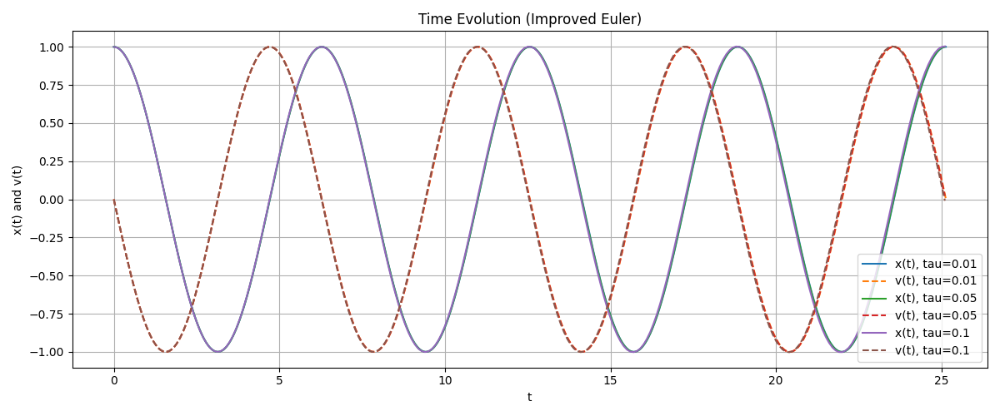

Exercise 17.2.2#
Q1 : Overall Process#
Adapted the
Explicit_Euler.cppto getexplicit_euler.csv.Adapted the
plotq1.pyto get performance plotplot1_time_evolution.pngandplot2_phase.png.Attention: Add .cpp path into
CMakeLists.txtsuch that we can compile directly.
Q1 : Plot#
Plot 1 : Time Evolution (explicit euler)#

Plot 2 : Phase Plots (explicit euler)#

Q1 : Conclusion#
In time evolution plots, both x(t) and v(t) show increasing amplitude, and the growth becomes faster for larger time steps.
In phase plots clearly illustrate this behavior: instead of forming closed circles (energy conservation), the trajectories spiral outward.
Overall, explicit Euler is numerically unstable for this oscillatory system, and bigger step sizes make worse.
Q2 : Overall Process#
Similar with Q1, adapted Improved_Euler.cpp to get improved_euler.csv. Then adapted plotq2.py and get graph plot3 and plot4.
Q2 : Plot#
Plot 3 : Time Evolution (improved euler)#

Plot 4 : Phase Plots (improved euler)#

Comparison: Explicit Euler Method vs Improved Euler Method#
Obviously, the Improved Euler method shows significantly better stability and accuracy for the mass–spring system.
For all three time steps, the time-evolution plots indicate that Improved Euler preserves both the amplitude and phase of the oscillation almost perfectly over long times. In contrast, Explicit Euler exhibits clear fluctuation.
The phase plots further highlight this difference: Improved Euler produces closed circular trajectories that remain nearly identical for all tau, indicating near-conservation of energy. Explicit Euler, however, generates outward-spiraling curves whose radius increases with time, especially for larger tau.